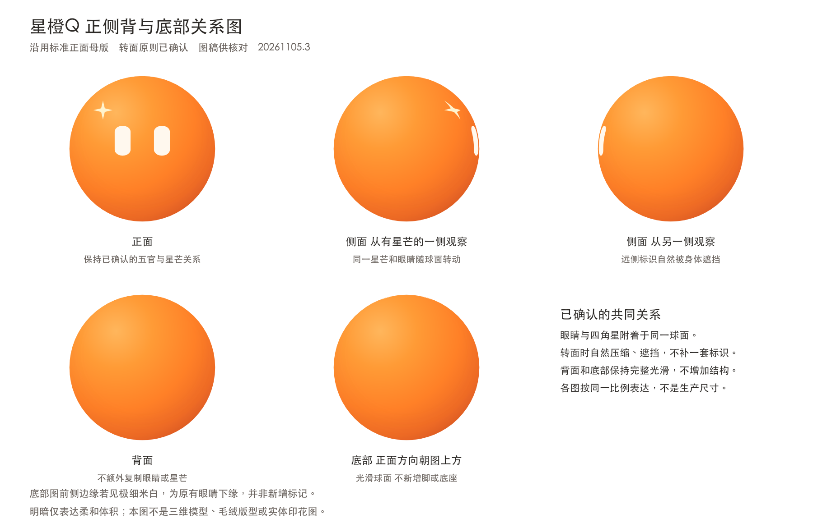

换个形状，挑个颜色，看它动起来。
喜欢这只？带走就好。图片透明底，动画保留完整动作。
选择一段日常，点按伙伴和它互动。
请启用JavaScript体验互动，下面的品牌素材仍可直接查看与保存。
先看向对方，再靠近一点。
把这段日常保存下来。导出当前伙伴与片段，不包含操作面板。
橙色软团子、米白双眼、左上四角星。头像扩展与剧情形变不替代标准母版。

品牌图片与原动画可直接保存。开启JavaScript后，可体验形状、配色和伙伴互动。
正在准备画面…